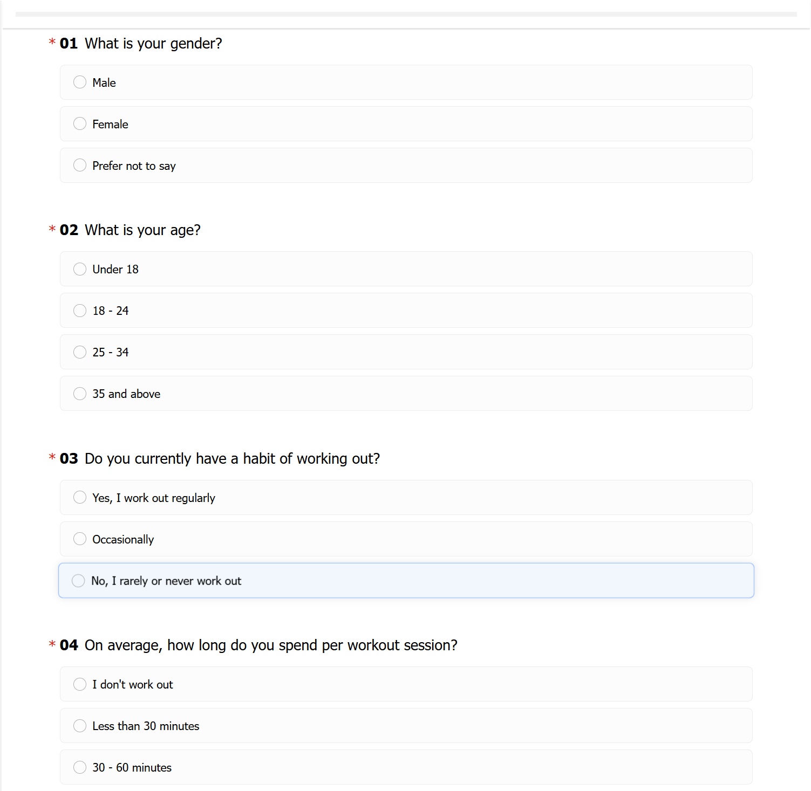
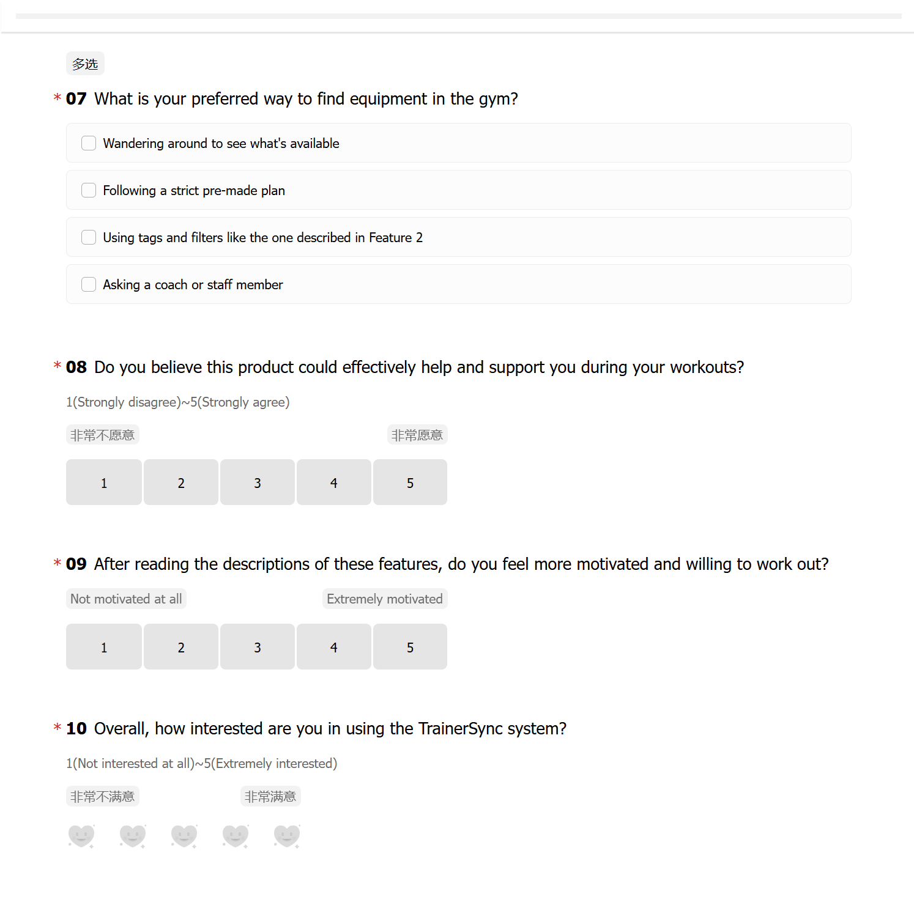

Why this architecture matters
The system is not only a workout library. It connects exercise discovery, live physiological feedback, location-based social interaction, and coach oversight into one continuous training flow.
A formal process portfolio for an Active Lifestyles web application that connects trainee-facing workout guidance with coach-facing monitoring, intervention, and reflection tools.
Module: CPT208 Human-Centric Computing | Track: Active Lifestyles | Project Theme: C3 Go Trainers
TrainerSync is a shared web application: adaptive workout cards + voice-first guidance + lightweight gym connect in one flow—stackable session planning, hands-free coaching cues, and on-floor help without a heavy social product.

The system is not only a workout library. It connects exercise discovery, live physiological feedback, location-based social interaction, and coach oversight into one continuous training flow.
The high-fidelity web prototype is available at https://rainm1st.github.io/CPT208-TrainerSync/.
Our group chose the Active Lifestyles track because gym training is a highly social, physically demanding, and feedback-sensitive activity, yet many existing digital tools only support the workout before it starts or after it ends. In real gym sessions, coaches often need to supervise multiple trainees at once, while trainees need quick reassurance that they are using the right equipment, moving at the right pace, and staying within a safe and effective training state. We saw a clear opportunity to design something more human-centered than a static fitness log or video library. TrainerSync was therefore conceived as a connected training experience that links the coach dashboard and trainee interface through real-time status cues, lightweight telemetry logic, and shared session feedback. We were also interested in the playful dimension of active systems: rather than only recording what happened, the system should shape motivation in the moment. This track fits our strengths because it allowed us to combine interface design, interaction flow, fitness-domain content, and service thinking into one coherent project. In short, we selected Active Lifestyles because it offers a meaningful design challenge where better interaction design can directly improve confidence, safety, coordination, and sustained engagement.
| Source | 3 Things Done Well | 3 Things Missed |
|---|---|---|
| Angosto et al. (2023) |
|
|
| Mazeas et al. (2022) |
|
|
| Mair et al. (2023) |
|
|
| Nishi et al. (2024) |
|
|
| Product | 3 Things Done Well | 3 Things Missed |
|---|---|---|
| Keep |
|
|
| Apple Fitness+ |
|
|
| Strava |
|
|
| Nike Training Club |
|
|

Age 20 | Undergraduate student | Beginner gym trainee | Mobile-first

Age 30 | Professional fitness coach | Manages 3 to 5 trainees in parallel | Tablet or PC first
Pre-development questionnaire (N=48, 8–14 Mar 2026): habits, session length, equipment discovery, and reactions to early feature descriptions. Alpha testing: three task-based sessions on the Alpha build with a beginner trainee, an intermediate trainee, and a coach-role proxy—completion notes, SUS-style scores, and debrief themes captured as screenshots. Follow-up UX questionnaire: fielded after the current high-fi iteration; satisfaction, task clarity, and qualitative feedback on adaptive workout cards, voice guidance, and lightweight gym connect are shown as chart exports below. Each block opens on click; figures are screenshots only (no external report links in this section).




Journey maps (trainee + coach): pain points around session prep, live guidance, coach intervention, and post-session reflection—content from workshops; figure finish where noted: Gemini [1].
Pain points around uncertainty, delayed correction, and weak training reflection.

Pain points around monitoring multiple trainees, deciding priority, and recording guidance.

Functional requirements = contractual “must do” behaviours. They outrank playful styling: the next subsection only shapes how those behaviours feel in use.
Objective: From target body areas, available equipment, session duration, and training level, the system assembles stackable multi-area task cards the trainee can combine for “today’s stack.” Each movement card carries a standard demo, a common-mistake contrast, substitute movements, and a short “why this today” intro so users quickly decide what to train and how to execute it correctly.
Objective: While training, the system delivers voice-led guidance—tempo, breathing prompts, inter-set timers, set/rep progress announcements, and completion feedback—so users can stay focused without constantly unlocking the phone. Visual UI remains a backup channel; the emphasis is on guiding, reminding, reporting, and acknowledging effort in real time. All coaching copy stays non-diagnostic and never implies clinical judgement.
prefers-reduced-motion silences ornamental UI pulses but preserves timers, captions, and essential progress readouts.Objective: Around on-the-floor needs—quick help, knowledge sharing, and light social support—the product offers fast pathways for assistance, peer tips, low-friction interactions, and coach connection. The goal is faster access to answers, feedback, and a sense of presence while training, without turning the gym session into a heavy chat product.
These playful must-haves pair with FR1–FR3: they specify how adaptive cards, voice guidance, and gym connect should feel—confident, human, and lightly delightful—without gamifying safety or medical nuance. Each item lists measurable acceptance checks for portfolio review and usability walkthroughs.
Design intent (↔ FR1): Stacking adaptive cards should feel like curating a confident plan, not solving a spreadsheet. Micro-motion, typography, and celebratory copy reward good choices while keeping mistake contrasts and substitutes legible.
Acceptance criteria:
Design intent (↔ FR2): The voice layer has a recognisable, calm persona—closer to a patient coach than a robotic timer. Micro-stingers (soft chimes, short affirmations) punctuate milestones without breaking concentration.
Acceptance criteria:
Design intent (↔ FR3): Help, tips, and light social touches should feel like a supportive gym culture—not surveillance, spam, or performative flexing. Microcopy foregrounds consent, gratitude, and reciprocity.
Acceptance criteria:
Abbreviations: FR = functional requirement (adaptive cards · voice guidance · gym connect). PH = playful must-have paired with each FR. PH1 delight in “today’s stack”; PH2 voice character & presence; PH3 trusted floor companionship.


Five items below as process evidence: interview photos (1–2); team online collaboration (3 — shared call / workspace screenshot while aligning research and questionnaire design); pre-development questionnaire instrument captures (4–5 — question wording in the live form; the same PNGs appear first in Questionnaires & testing evidence → 1 · Pre-development questionnaire, before the aggregate chart). Each item is captioned for traceability.

High novelty and potentially rich correction, but intrusive in a gym setting and dependent on camera framing, lighting, and privacy consent.
Chosen direction. It combines stackable adaptive workout planning, hands-free voice coaching, and lightweight on-floor connect so trainees get clarity, focus, and timely human support without a heavy social product.
Useful for records, but too passive because it only explains performance after the moment when support was needed.
Crazy Eights is a structured divergence technique: each participant folds or divides paper into eight frames and sketches eight distinct ideas in a single timed round, about eight minutes total. We ran one facilitated round after we had aligned on trainee and coach pain points but before locking Alternative B, so sketches could stay deliberately rough and exploratory rather than “final UI.”
Our prompts focused TrainerSync-specific tensions—finding movements quickly on the gym floor, keeping encouragement visible during a heavy set, letting coaches scan risk without drowning in charts, and adding playful social signals that do not derail safety. After the silent sketch burst we clustered motifs (library entry patterns, live HUD layouts, coach radar summaries, lightweight reactions) and carried only the strongest patterns into the low-fi wireframe and HTML walkthrough.


Crazy Eights: hand sketches on paper by Team C3-6; gallery photos are team-owned (no generative image model).
Our low-fidelity deliverable is LowFi-wireframe: one clickable document with the same information architecture as the final product, grayscale boxes and labels only, and in-page navigation so reviewers can walk trainee versus coach flows before any high-fi polish. This matches the coursework expectation for an inspectable low-fi prototype without relying on a separate design tool.
LowFi-wireframe was iterated with Claude Code in the project repo: we supplied screen lists, role splits (trainee / coach), and fidelity rules (wireframe-only, no final colours or imagery). Team C3-6 reviewed every layout and copy change; the prompt below is representative of how we asked for structured, clickable low-fi pages.
Low-fi wireframe prompt (Claude Code) — edited per session: “You are working in our CPT208 TrainerSync repo. Add or update `assets/lowfi/LowFi-wireframe.html` for LOW-FIDELITY wireframes only: grayscale, 1px borders, placeholder rectangles for charts/media, system UI font, no photographs and no brand polish beyond a simple accent for focus states if needed. Screens to cover (trainee + coach): Home, Exercise Library, Exercise Detail, Live Training, Map, Companion, Profile, Coach Dashboard, Trainee List, Live Detail, Messages. Requirements: (1) Clickable navigation between sections (anchors or a small top nav). (2) Label each block with its purpose (e.g. ‘HR ring placeholder’). (3) Show coach vs trainee entry paths where they diverge. (4) Static pages, relative paths only, must open from GitHub Pages without a build step. (5) Keep copy in formal English and aligned with our requirements doc—do not invent new features.”


Live hosted demo: https://rainm1st.github.io/CPT208-TrainerSync/ · Vibe coding disclosure in System build: vibe coding below.


CPT208 Technical Reflection: prompts used, how we verified against requirements, and ethics. Product decisions stayed with Team C3-6; Cursor, Claude Code, and Codex mainly scaffolded HTML/CSS/JS, refactors, and GitHub Pages fixes—see References [3]–[5].
Below are realistic prompts that match how we built the static high-fi. Paraphrase markers […] stood in for pasted snippets from our wireframes.
You are helping with a CPT208 static fitness web prototype called TrainerSync hosted on GitHub Pages. Stack: plain HTML/CSS/JS or minimal tooling only. Do NOT invent new product requirements. Prompt A — shell & routing: “Here is our screen list: Home, Exercise Library, Exercise Detail, Live Training, Map, Companion, Profile, Coach Dashboard, Trainee List, Live Detail, Messages. Create a shared nav/header pattern and separate HTML pages OR hash routes so each URL works when refreshed on GitHub Pages. Use relative paths only.”
Prompt B — Live Training panel: “Implement the Live Training page from this wireframe snippet [paste]. Use mock data for heart rate (updates every 2s within 110–165 bpm). Show set counter and a non-medical disclaimer line we provide verbatim: ‘For wellness motivation only—not medical advice.’ Colours must match tokens #c8f542 accent and dark navy background.”
Prompt C — coach dashboard grid: “Coach Dashboard needs responsive CSS grid: 2 columns on desktop, 1 column <768px. Cards show trainee name, status pill, sparkline placeholder. Fix overflow-x without horizontal scroll on mobile.”
Prompt D — map / companion stubs: “Map page: embed a lightweight mock map container (static image or CSS grid) with clickable pins that open a small emoji reaction tray (fire, muscle, thumbs-up). No real geolocation API required—use fake coordinates.”
Prompt E — accessibility pass: “Audit focus order for the Live Training controls (pause, end session). Add visible :focus outlines matching brand lime; ensure buttons have aria-labels where icons are textless.”
Prompt F — deployment bug: “GitHub Pages returns 404 for nested routes /coach/live. Refactor to hash routing (#/coach/live) OR relative paths; show exact diff.”
Prompt G — playful UI polish: “Add subtle CSS pulse on the heart-rate ring when crossing mock ‘amber’ threshold; keep reduced-motion fallback via prefers-reduced-motion.”
Generated layouts often default to mouse-first interactions and colour-only status. We added dual-encoded labels for zones, preserved keyboard focus, and avoided presenting mock telemetry as clinical truth.
Models may suggest aggressive copy or stereotypical gym rhetoric. We replaced such drafts with neutral encouragement grounded in our questionnaire/interview notes, and kept coach visibility bounded by explicit binding/consent language.
| Member | Student ID | Main Area | What Was Built |
|---|---|---|---|
| Na Li | 2361132 | Research, Integration & Deployment | Persona research, user stories, portfolio narrative, motivation section, GitHub Pages deployment, and static-link/path validation. Supported trainee/coach flow integration and evaluation data organization. |
| Zifan Wang | 2362457 | Low-Fi & Iteration Documentation | Low-fi wireframe exploration, iteration records, visual asset organization, reference collection, and usability testing material preparation. Supported final reflection and AI disclosure wording. |
| Kan Liu | 2362244 | UX Logic & Evaluation | Coach workflow design, dashboard IA, intervention scenarios, alternatives comparison, testing tasks. |
| Jintong Zhang | 2360862 | High-Fi Interface & Engineering | High-fidelity interface implementation, route structure, responsive layout, and screenshot export. Supported screenshot selection and journey-map interpretation. |
Led trainee persona research, user story writing, portfolio and motivation content framing, and final English copy review. Also handled GitHub Pages deployment setup, static asset/link path validation, and page-level integration checks. Supported trainee/coach flow integration and evaluation data organization.
Led low-fi wireframe exploration, product iteration documentation, visual asset organization, reference collection, and usability testing materials. Supported final reflection and AI disclosure wording.
Led coach workflow design, dashboard information architecture, monitoring logic, intervention scenarios, and comparison of design alternatives. Supported evaluation task design and data table preparation.
Led high-fidelity interface implementation, route structure, responsive web layout, and screenshot export. Supported screenshot selection and user journey interpretation.
Three task-based usability sessions on the Alpha build: completion, errors, debrief notes, and SUS scores compared across participants (instrument background per Lewis, 2018; see References [10]).
Profile: undergraduate student, occasional gym user, mobile-first.
Observed issue: The participant understood the workout library but hesitated before starting a live session because the CTA hierarchy was not strong enough.
Design implication: Make the session start action more prominent and use clearer intensity preview cues.
Profile: regular gym user, familiar with workout apps, values progress tracking.
Observed issue: The live screen was engaging, but the participant wanted a clearer explanation of what heart-rate colors meant.
Design implication: Add microcopy for target zones and make warnings more explainable.
Profile: experienced gym user asked to complete coach monitoring tasks.
Observed issue: The coach dashboard was useful, but priority ordering needed to be more obvious when several trainees required attention.
Design implication: Add clearer alert ranking, status labels, and one-click strategy dispatch.
Earlier interface screens showed the core idea but had weaker visual hierarchy and less explicit feedback logic.
The current version strengthens task entry, feedback visibility, coach monitoring, and session reflection.
TrainerSync matters because it treats fitness technology as a shared human-centered service rather than a private tracking tool. The design can improve confidence, safety, and coach efficiency, but it also creates ethical responsibilities. Heart-rate cues and training status should not be framed as medical judgement. Users need consent controls, clear explanations of what data is visible to coaches, and boundaries around session history. The playful layer should support motivation without creating pressure, shame, or over-monitoring.
Tool split (see formal list below): Google Gemini [1] for persona / journey-map figure rendering where captioned; OpenAI ChatGPT [2] for the architecture diagram visual finish only (structure and labels remain team-authored); Cursor, Claude Code, and OpenAI Codex [3]–[5] for vibe coding the hosted prototype and portfolio HTML/CSS. Research tables, usability results, questionnaire design and charts, and design reasoning were written or verified by the team.
We acknowledge CPT208 teaching staff for the project brief and assessment guidance. We also acknowledge pilot participants and classmates who provided feedback on the TrainerSync concept and interface flow.